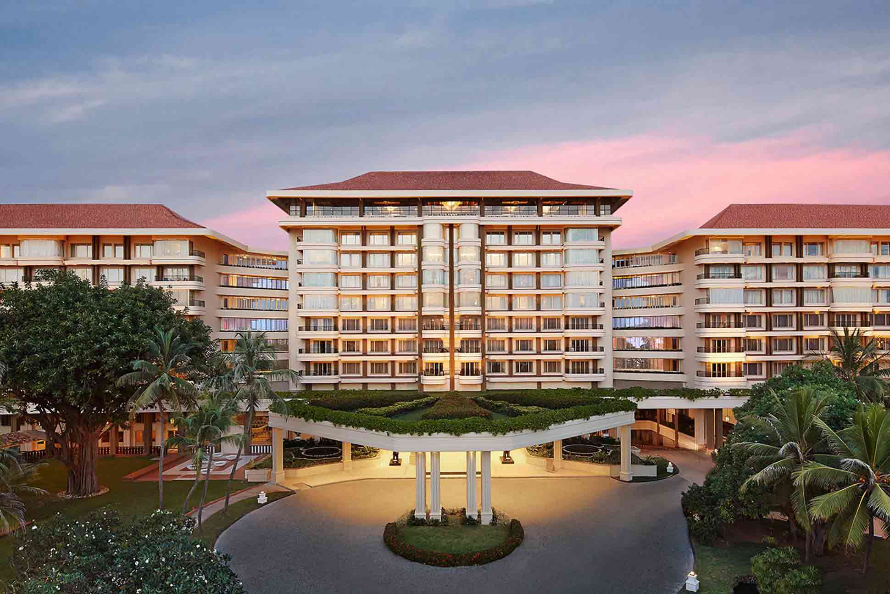
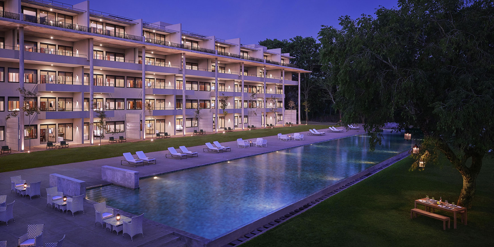

<!DOCTYPE html>
<html lang="eng">

<head>
    <meta charset="UTF-8">
    <meta name="description" content="this is the web page of hotel Coral Bay Safari Lodge Yala">
    <meta name="viewport" content="width=device-width, initial-scale=1">
    <link rel="stylesheet" href="style.css">
</head>

</html>

<body>
    <header class="header">
        <nav class="nav">
            <a href="index.html"></a>
            <div class="mobile-menu-icon">
                <div class="bar"></div>
                <div class="bar"></div>
                <div class="bar"></div>
            </div>
            <ul class="navlist">
                <li><a href="index.html">Home</a></li>
                <li><a href="adventure.html">Adventure</a></li>
                <li><a href="restaurant&bar.html">Restaurant & Bar</a></li>
                <li><a href="branches.html">Branches</a></li>
                <li><a href="booking.html">Booking</a></li>
            </ul>
        </nav>
        <div class="mobile-menu">
            <ul class="mobile-navlist">
                <li><a href="index.html">Home</a></li>
                <li><a href="adventure.html">Adventure</a></li>
                <li><a href="restaurant&bar.html">Restaurant & Bar</a></li>
                <li><a href="branches.html">Branches</a></li>
                <li><a href="booking.html">Booking</a></li>
            </ul>
        </div>
    </header>
    <h1 class="branchesheading">Join with us to enjoy your vacation</h1>
    <div class="branchesmainpara">
        Whether you choose to stay at one of our branches or not, we are dedicated to providing you with an
        unforgettable experience at Grand Horizon.
        From the lush serenity of our Yala Haven retreat to our bustling city center locations, our commitment to
        luxury, comfort,
        and exceptional service remains unwavering. Experience the elegance of our thoughtfully designed rooms, the
        exquisite cuisine
        at our on site restaurants, and relax in our world class facilities. If you want to do business or relax, our
        team of trained
        professionals will ensure your stay is no less than exceptional. We want you to take a look at EverLuxe, in
        which each branch
        reflects our unconditional commitment to your comfort and satisfaction.
    </div>
    <div class="branch1">
        <div class="branch1image">
            
        </div>
        <div class="branch1googlemap">
            <iframe
                src="https://www.google.com/maps/embed?pb=!1m18!1m12!1m3!1d12107.53774163296!2d79.82697474217619!3d6.926182676806713!2m3!1f0!2f0!3f0!3m2!1i1024!2i768!4f13.1!3m3!1m2!1s0x3ae2593bcace8c17%3A0xe6b567a8d83fb7ce!2sGalle%20Face%20Beach!5e0!3m2!1sen!2slk!4v1694263985402!5m2!1sen!2slk"
                width="450" height="350" style="border:0;" allowfullscreen="" loading="lazy"
                referrerpolicy="no-referrer-when-downgrade"></iframe>
        </div>
        <div class="branch1para">
            <h2>Grand Horizon Colombo 07</h2>
            <h3>The Bustling Capital Of Our Island Home</h3><br>
            <p> The Grand Horizon Colombo Seven invites you into the lively heart of Sri Lanka. A proud example of Sri
                Lankan
                hospitality is our luxurious home, which was once the residence of our founder. We offer a unique
                experience at
                the heart of Sri Lanka's hotels, rooted in family heritage. You'll be treated to the latest luxuries,
                including
                a rooftop bar and an infinity pool. In order to ensure you are surrounded by the very best of Colombo we
                have a
                prime location in the heart of the city and lush suburbs..
            </p>
        </div>
    </div>
    <div class="branch2">
        <div class="branch2para">
            <h2>Grand Horizon Galle</h2>
            <h3>Your Home On A Southern Coastal Hilloc</h3><br>
            <p>
                Perched majestically in Galle, Grand Horizon Colombo graces a stunning hillock overlooking the vast
                Indian Ocean.
                Our landmark hotel is situated in the middle of a blue sea and an ocean highway, offering easy access
                from all
                corners of our paradise. From Colombo, a scenic coastal drive of 3-4 hours or a swift journey via the
                Southern In
                less than an hour, the expressway will bring you to our serene coast.
            </p>
        </div>
        <div class="branch2googlemap">
            <iframe
                src="https://www.google.com/maps/embed?pb=!1m18!1m12!1m3!1d7935.525930648984!2d80.20695834377723!3d6.0272382831816165!2m3!1f0!2f0!3f0!3m2!1i1024!2i768!4f13.1!3m3!1m2!1s0x3ae173a4115316af%3A0x6e9078b6e3e0a7f!2sGalle%20Dutch%20Fort%2C%20Galle%2080000!5e0!3m2!1sen!2slk!4v1694268721599!5m2!1sen!2slk"
                width="450" height="350" style="border:0;" allowfullscreen="" loading="lazy"
                referrerpolicy="no-referrer-when-downgrade"></iframe>
        </div>
        <div class="branch2image">
            
        </div>
    </div>
    <div class="branch2mobile">
        <div class="branch2mobileimage">
            
        </div>
        <div class="branch2mobilegooglemap">
            <iframe
                src="https://www.google.com/maps/embed?pb=!1m18!1m12!1m3!1d7935.525930648984!2d80.20695834377723!3d6.0272382831816165!2m3!1f0!2f0!3f0!3m2!1i1024!2i768!4f13.1!3m3!1m2!1s0x3ae173a4115316af%3A0x6e9078b6e3e0a7f!2sGalle%20Dutch%20Fort%2C%20Galle%2080000!5e0!3m2!1sen!2slk!4v1694268721599!5m2!1sen!2slk"
                width="450" height="350" style="border:0;" allowfullscreen="" loading="lazy"
                referrerpolicy="no-referrer-when-downgrade"></iframe>
        </div>
        <div class="branch2mobilepara">
            <h2>Grand Horizon Galle</h2>
            <h3>Your Home On A Southern Coastal Hilloc</h3><br>
            <p> 
                Perched majestically in Galle, Grand Horizon Colombo graces a stunning hillock overlooking the vast
                Indian Ocean.
                Our landmark hotel is situated in the middle of a blue sea and an ocean highway, offering easy access
                from all
                corners of our paradise. From Colombo, a scenic coastal drive of 3-4 hours or a swift journey via the
                Southern In
                less than an hour, the expressway will bring you to our serene coast.
            </p>
        </div>
    </div>
    <div class="branch3">
        <div class="branch3image">
            
        </div>
        <div class="branch3googlemap">
            <iframe
                src="https://www.google.com/maps/embed?pb=!1m18!1m12!1m3!1d3957.561945569288!2d80.6339426777339!3d7.290576595019829!2m3!1f0!2f0!3f0!3m2!1i1024!2i768!4f13.1!3m3!1m2!1s0x3ae367c77c3ff63b%3A0xbe9ba9f2d9b1873!2sKandy%20Lake%20Round!5e0!3m2!1sen!2slk!4v1694277126041!5m2!1sen!2slk"
                width="450" height="350" style="border:0;" allowfullscreen="" loading="lazy"
                referrerpolicy="no-referrer-when-downgrade"></iframe>
        </div>
        <div class="branch3para">
            <h2>Grand Horizon Kandy</h2>
            <h3>The Heartland of the Hills</h3><br>
            <p>
                Surrender to the tranquility of the Lake in Kandy,
                Sri Lanka's pretiest, as you step into the historic realm of Kandy. Our retreat lies across the city's
                hustle and bustle, offering a quick view of the Temple of Tooth, Local Attractions such as Victoria Rantambe
                Randenigalasanctuary, Knuckles & Hanthane Mountains. Your journey to our home will begin with a 4 hour drive from
                the capitalor airport.
            </p>
        </div>
    </div>
    <div>
        <table>
            <tr>
                <th>Branch Name</th>
                <th>Facilities</th>
                <th>Activities</th>
                <th>Ratings</th>
            </tr>
            <tr>
                <td>Grand Horizon Kandy</td>
                <td>
                    <ul>
                        <li>Spa</li>
                        <li>Bar</li>
                        <li>Pool Bar</li>
                        <li>Buffet</li>
                        <li>Set Menu</li>
                    </ul>
                </td>
                <td>
                    <ul>
                        <li>Swimming Pool</li>
                        <li>Badminton Court</li>
                        <li>Table Tennis</li>
                        <li>Bike RIding</li>
                    </ul>
                </td>
                <td>5 Star</td>

            </tr>
            <tr>
                <td>Grand Horizon Colombo</td>
                <td>
                    <ul>
                        <li>Spa</li>
                        <li>Bar</li>
                        <li>Pool Bar</li>
                        <li>Buffet</li>
                        <li>Set Menu</li>
                    </ul>
                </td>
                <td>
                    <ul>
                        <li>Swimming Pool</li>
                        <li>Tennis Court</li>
                        <li>Table Tennis</li>
                        <li>Bike RIding</li>
                    </ul>
                </td>
                <td>5 Star</td>
            </tr>
            <tr>
                <td>Grand Horizon Galle</td>
                <td>
                    <ul>
                        <li>Spa</li>
                        <li>Bar</li>
                        <li>Pool Bar</li>
                        <li>Buffet</li>
                        <li>Set Menu</li>
                    </ul>
                </td>
                <td>
                    <ul>
                        <li>Swimming Pool</li>
                        <li>Cricket Ground</li>
                        <li>Boat Riding</li>
                        <li>Surfing</li>
                    </ul>
                </td>
                <td>5 Star</td>
            </tr>
        </table>
    </div>
    <div class="footer">
        <div class="footerTopic">
            Grand Horizon Yala
        </div>
        <div class="content">
            <div class="social-media">
                <h4>Social</h4>
                <p><a href="https://twitter.com/i/flow/login?redirect_after_login=%2Fsettings%2Faccount%3Flang%3Den"
                        target="_blank">Twitter</a></p>
                <p><a href="https://www.facebook.com/" target="_blank">Facebook</a></p>
                <p><a href="https://www.instagram.com/accounts/login/" target="_blank">Instagram</a></p>
            </div>
            <div class="links">
                <h4>Links</h4>
                <p><a href="index.html">Home</a></p>
                <p><a href="adventure.html">Adventure</a></p>
                <p><a href="restaurant&bar.html">Restaurant & Bar</a></p>
                <p><a href="branches.html">Branches</a></p>
                <p><a href="booking.html">Booking</a></p>
            </div>
            <div class="details">
                <h4 class="address">Address</h4>
                <p>No: 96/A <br>Park Rd, <br>Tissamaharama, <br>Sri Lanka.</p>
            </div>
            <div class="details">
                <h4 class="contact">Contact</h4>
                <p><a href="tel:94701234567">+94-771234567</a></p>
                <p><a href="mailto:info@serenehotels.com">info@grandhorizon.com</a></p>
            </div>
        </div>
    </div>
    <script>
        document.addEventListener("DOMContentLoaded", function () {
            const mobileMenuIcon = document.querySelector(".mobile-menu-icon");
            const mobileMenu = document.querySelector(".mobile-menu");

            mobileMenuIcon.addEventListener("click", function () {
                mobileMenu.classList.toggle("open");
            });
        });
    </script>
</body>

</html>